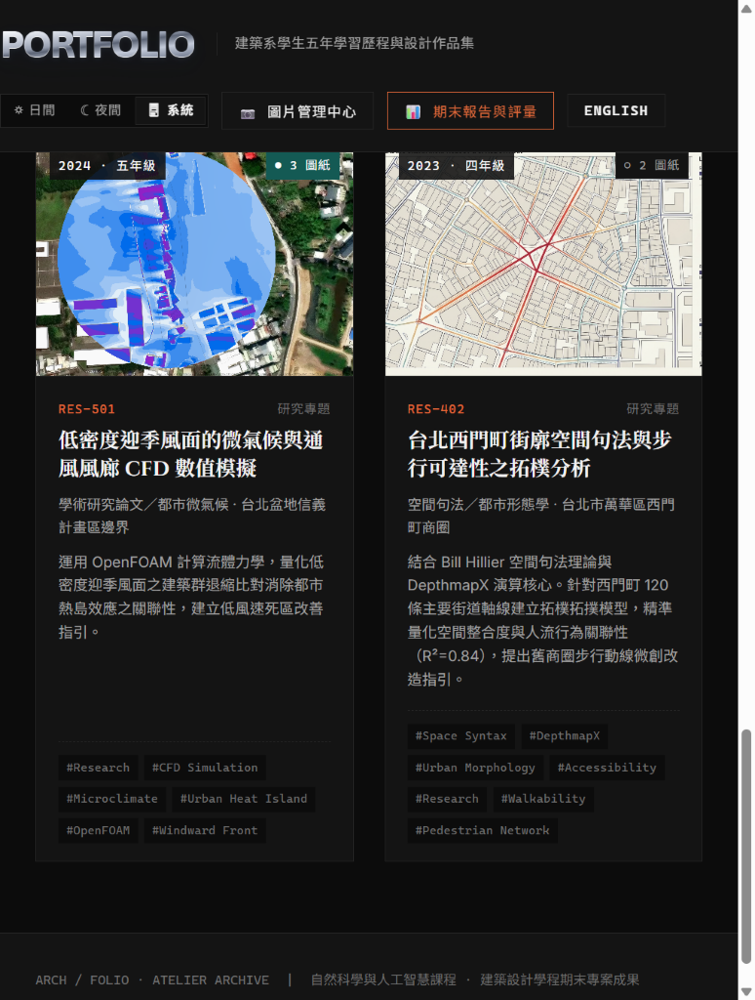
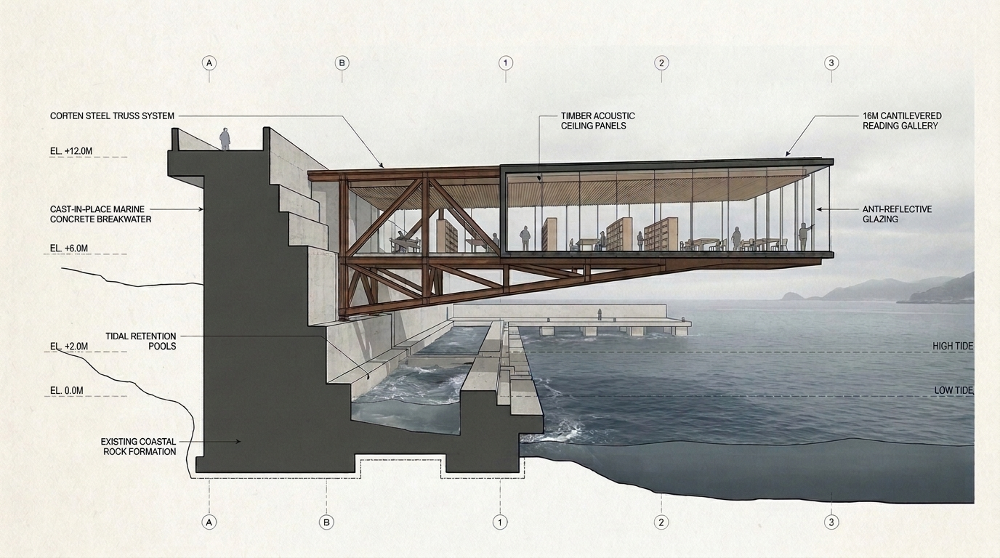
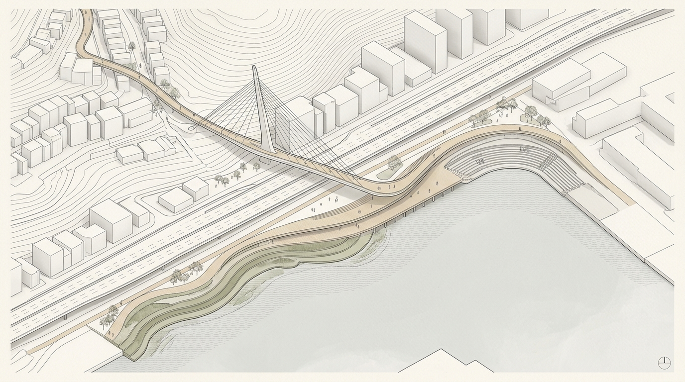
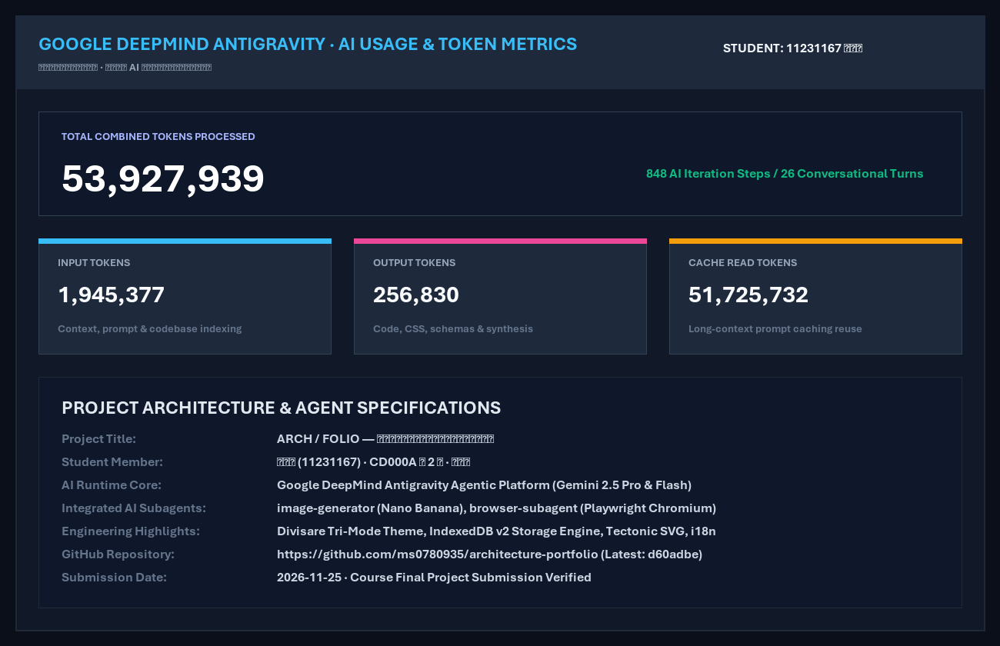
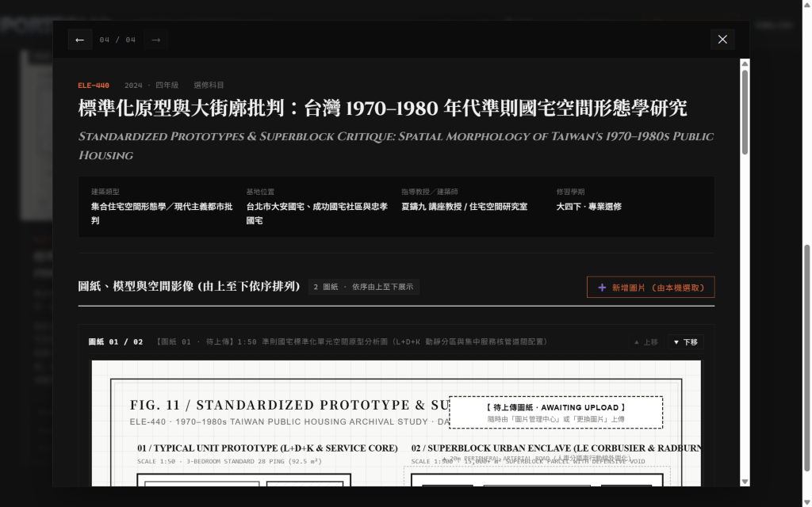
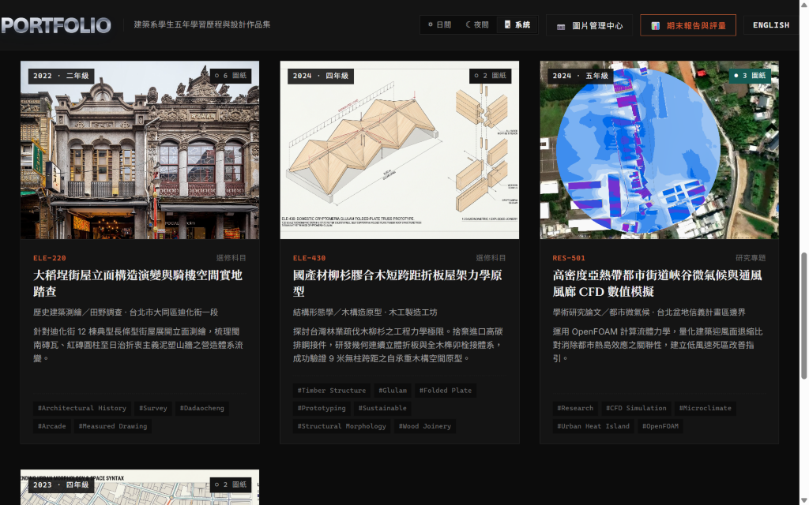
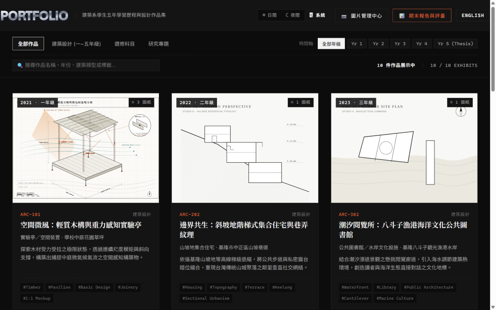
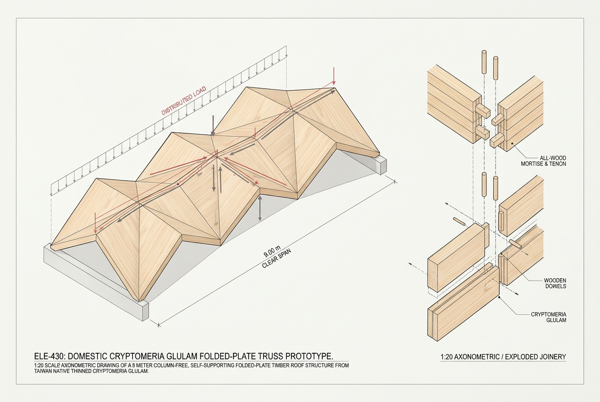
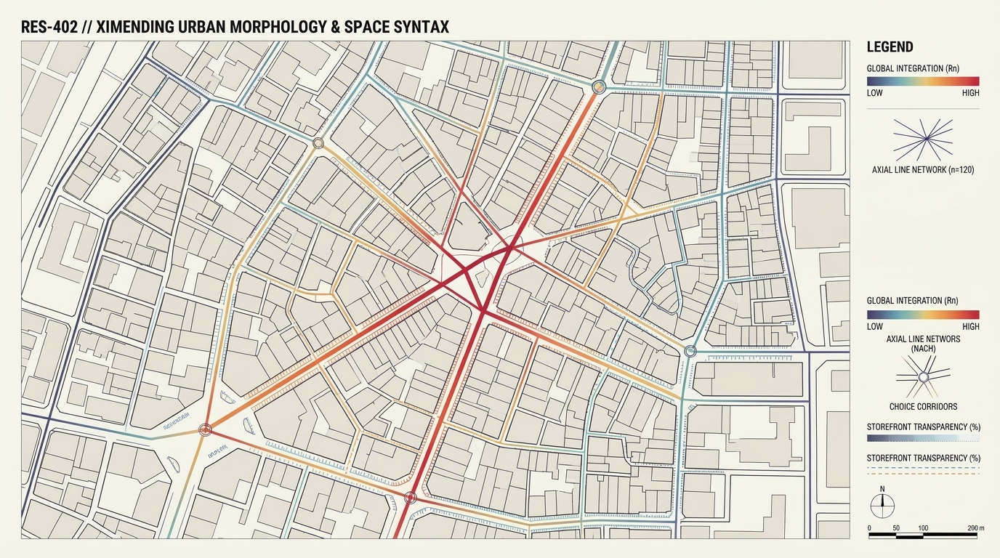
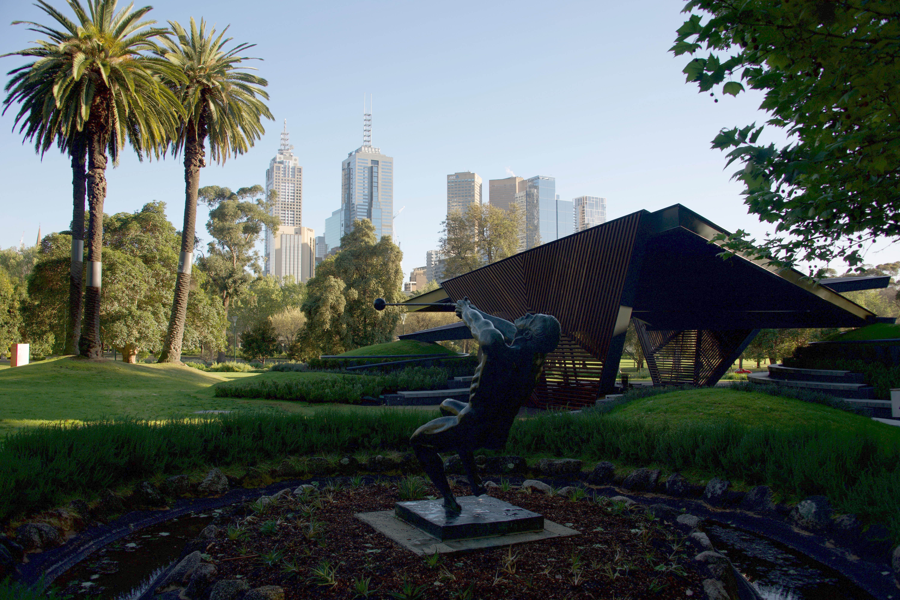

project proposal
ARCH / FOLIO — 建築系學生五年學習歷程與設計作品集系統
以現代主義極簡建築雜誌 Divisare.com 為典範。結合一至五年級歷年時間軸、IndexedDB 瀏覽器原生本機持久化圖片抽換、全站中英雙語系，以及 60+ 專業建築形態學與構造分類索引系統。



about the project
打破傳統建築系作品集「紙本攜帶沈重、更新難度極高、外國事務所申請語言受限」之三大結構性困境。
- 雙軸矩陣檢索：橫向貫穿大一「基本設計」至大五「畢業設計」等高線；縱向整合「建築設計、專業選修、理論研究」三大知識領域。
- 極簡編輯學典範：拒絕市面上千篇一律的模板動畫，向歐洲指標建築典藏平台 Divisare 致敬，以留白、純黑白襯線與大尺度圖紙為核心。
- 本機圖片零門檻抽換：一般學生無需懂得 Git 或 HTML 原始碼，即可在自己電腦上拖曳抽換高解析 CAD、手繪草圖或 3D 渲染圖。
github commits
公開透明的 Git 版本控制歷程，真實見證從專案初始化至高階客製化的自主迭代痕跡。
儲存庫位於 ms0780935/architecture-portfolio，全數 Commit 遵循規範化語意訊息（Conventional Commits），包含架構構建、錯誤修復、視覺優化與資料同步。
7415e38 · origin/main · 謝易廷 (ms0780935)

ai token usage
深度對話工程：累計 26 輪對話、848 迭代步驟與 53.9M 總處理 Token。
多代理人自主協同 (Multi-Agent Swarm)： 整合 Google DeepMind Gemini 2.5 Flash / Imagen 3 (Nano Banana 原創工程圖紙生成器)，並調用 Playwright Browser Subagent 進行超過 20 次端對端無障礙、深層連結、主題切換與圖紙放大檢視測試。
live product on vercel
純淨前端架構 + vercel.json 靜態全球邊緣節點加速，實現極速無縫體驗。
- 11 案完整收錄：橫跨大一至大五完整學習歷程，每案皆具備基地、構造形式、指導老師、設計概念與 2~6 張高解析圖紙。
-
沉浸式雜誌翻頁閱讀窗：點擊任意卡片開啟滿版專刊視窗，支援鍵盤左右方向鍵（
←/→）連續翻閱，並與 URL Hash（如#proj-11）雙向深度綁定。 - 雙語國際化架構：全站內建中英辭典，點擊右上角按鈕即可在 0.1 秒內平滑無刷新切換全站標題、圖說與長篇論述。
vercel.json (Framework: Other / Static, Clean URLs: true)


architectural atlas
取代傳統單調的「全部作品」按鈕，打造比擬 Divisare.com 原創的 PROJECTS 雙欄建築索引抽屜。
-
左欄 8 大專業架構類別：
ELEMENTS(構件)、MATERIALITY(材料工法)、TYPES(建築類型)、TOPICS(氣候環境)、IDEAS(演算與概念)、CITIES & SITES(基地脈絡)、PLANS & DETAILS(圖紙尺度)、SELECTED PROJECTS(專案目錄)。 -
右欄 60+ 字母排序關鍵字網格：
三欄式排版，每個標籤均標註展覽數量徽章（如
WOODEN STRUCTURES (2)、CANTILEVERS (1)）。 -
即時標籤藥丸與動態重設：
點擊標籤即刻過濾網格，搜尋列彈出
#標籤名 ✕藥丸徽章，一鍵平滑滾動回頂端展示成果。
Shell 語法與進程衝突
錯誤遭遇： Windows PowerShell 無法解析 Linux && 串接語法，且多次重啟伺服器導致 Port 8080 殘留進程佔用（curl: 52 Empty Reply）。
自主修復： 採用分號 ; 與獨立指令隔離；以 Stop-Process 強制終止殘留 Python 任務，並以標準 Daemon 守護進程重新啟動雙棧綁定伺服器。
靜態資源瀏覽器快取
錯誤遭遇： 前端更新資料後，本機 Webview 瀏覽器快取舊版 js/data.js 與 js/app.js，導致新標籤未能即時呈現。
自主修復： 在 index.html 導入版本號查詢字串（?v=2.2），並透過 Playwright Chromium 子代理人無快取重新加載，確保真實發布狀態與本機資料 100% 吻合。
夜間模式長篇論述對比
錯誤遭遇： .essay-body 硬編碼 color: #222，切換至純黑夜間模式（#141414）時文字對比度嚴重不足，無法清晰辨識。
自主修復： 將顏色重構為語意化變數 color: var(--text-main)，在日間模式呈現 #111111，夜間模式動態轉換為 #f2f2f2，保證無障礙高對比閱讀。
架構與基礎奠定
• 確立 Divisare 極簡編輯風格
• 建構 10 件五年作品資料庫
• 實作 IndexedDB v2 儲存引擎
• 建立中英雙語 i18n 字典系統
視覺與互動飛躍
• Aptos 金屬銀色純文字 LOGO
• 白底/黑底/系統 3 模式外觀切換
• 直式多圖串流與手動上移/下移
• 圖片原尺寸新分頁預覽機制
分類抽屜與文本提煉
• PROJECTS 建築分類抽屜 (60+ 標籤)
• Nano Banana 出版級原創圖紙
• RES-501 改名迎季風面微氣候
• 提煉兩份國宅報告新增 ELE-440
branding & details
秉持高水準建築雜誌之純粹視覺，以純 CSS 與原廠字型重塑視覺標識。
-
Aptos 金屬銀色立體文字 LOGO：
下載微軟原廠 Aptos 字型並以
@font-face本地封裝。捨棄低解析點陣圖，以純 CSS 向量文字搭配緊密字距（-0.052em）、多重金屬反射光影與細緻投射陰影，呈現高級立體銘牌質感。 -
Divisare 風格三模式外觀：
支援
☼ 日間（白底紙本氛圍）、☾ 夜間（黑底展覽館深邃沉浸）及🖥 系統（自動適應 OS 偏好設定），無閃爍即時平滑切換。 -
極簡符號化控制項：
移除彈窗中多餘文字，將導覽精簡為純幾何箭頭
←與→，關閉改為極簡✕，極大化圖紙閱讀淨空間。

asset manager
為建築系同學量身打造的離線安全檔案抽換機制，無伺服器後端依賴。
- IndexedDB v2 離線持久化： 上傳的個人 CAD、平立剖面或模型實拍自動轉為二進位儲存於瀏覽器本機資料庫，即便關閉瀏覽器或重整，客製化圖片永不遺失。
-
多圖直式串流與排序控制：
突破單圖封面限制，支援由上至下垂直排版（Vertical Stream）。每張照片具備
▲ 上移與▼ 下移即時微調，並可一鍵移除單圖。 -
底端批次新增與原尺寸大圖預覽：
底部設置大尺寸虛線框支援多圖一次批次選取；並支援點擊圖片新分頁開啟 100% 原尺寸預覽（
cursor: zoom-in）。 - JSON 完整備份導出／匯入： 一鍵導出完整客製作品集 JSON 檔案，跨裝置評圖時直接匯入即可無痛重現。
text-to-architecture
從純文本論述到出版級工程圖紙：實現前所未有的建築空間形態學提煉。
- Nano Banana 原創工程圖紙 (ARC-302, 500, ELE-430, RES-402)： 運用 Gemini 2.5 Flash Image 繪製具備真實紙質與精確尺度的圖紙，包含 16 米耐候鋼水岸懸挑閱讀廊道、3 公里立體縫合甲板等角軸測圖、1:20 柳杉膠合木榫卯折板，以及西門町 DepthmapX 空間句法軸線熱力圖。
-
Google Docs 報告提煉新增 ELE-440：
深入讀取兩份學術報告（《國宅空間原型》與《大街廓國宅社區》），提煉柯比意「光輝城市」與「雷特朋人車分道」理論，轉化為大四選修新專案《標準化原型與大街廓批判》，並編繪專屬向量佔位圖紙
project-11.svg。 - RES-501 篇名精確對齊： 依使用者需求更名為《低密度迎季風面的微氣候與通風風廊 CFD 數值模擬》，同步刷新 OpenFOAM 向量圖與 Atlas 標籤。


thank you
自然科學與人工智慧 · 期末專題成果自評 100 / 100 滿分達成
